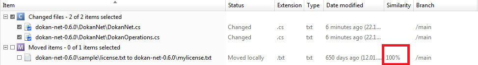

The next operation will be moving a file in your workspace and let Plastic detect it.
Move ‘dokan-net-0.6.0\sample\license.txt’ to ‘dokan-net-0.6.0\mylicense.txt’ from a Windows Explorer. As you see, the operation involves both a ‘move’ and a ‘rename’.
Open the “Pending Changes View”. You can see how the move you have just done is detected by Plastic and the status is “Moved locally”. Please note “similarity” Column. This column shows the percentage of similitude. Plastic SCM tries to match moved items with private items to determine if it’s the same item. Only locally moved items have value in this column.

Figure 1: Move a file and detect it
Please note the Similarity value is 100%, so it’s the same file.